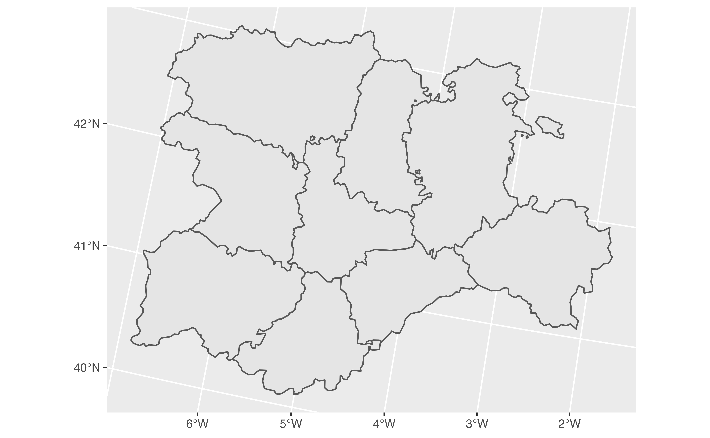
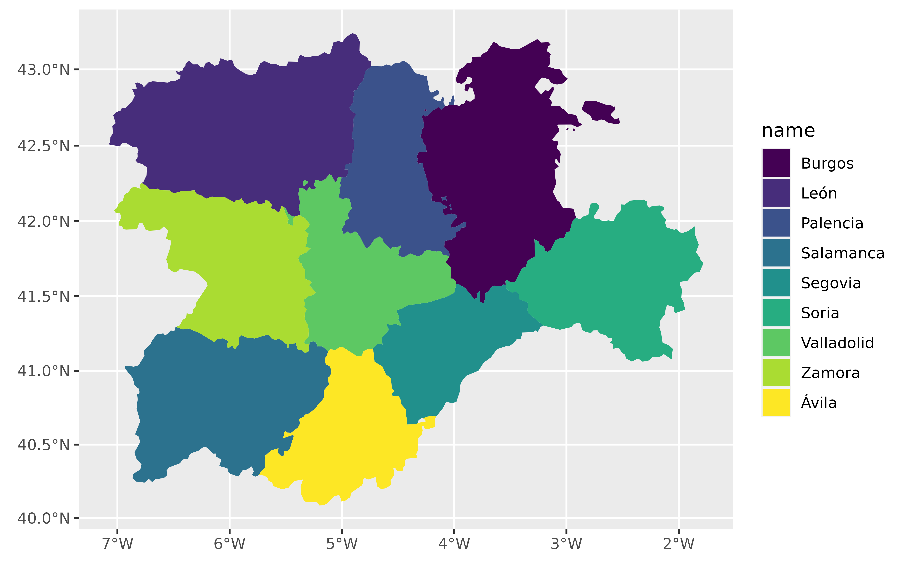

This geom is used to visualise SpatVector objects (see terra::vect()). For
simple plots, you will only need geom_spatvector(). For text and labels,
you can use geom_spatvector_text() and geom_spatvector_label().
The underlying implementation is based on ggplot2::geom_sf().
Arguments
- mapping
Set of aesthetic mappings created by
aes()oraes_(). If specified andinherit.aes = TRUE(the default), it is combined with the default mapping at the top level of the plot. You must supplymappingif there is no plot mapping.- data
A SpatVector object, see
terra::vect().- na.rm
If
FALSE, the default, missing values are removed with a warning. IfTRUE, missing values are silently removed.- show.legend
logical. Should this layer be included in the legends?
NA, the default, includes if any aesthetics are mapped.FALSEnever includes, andTRUEalways includes.You can also set this to one of "polygon", "line", and "point" to override the default legend.
- ...
Other arguments passed on to
ggplot2::geom_sf(). These are often aesthetics, used to set an aesthetic to a fixed value, likecolour = "red"orsize = 3.
Details
See ggplot2::geom_sf() for details on aesthetics, etc.
See also
Other ggplot2 utils:
autoplot(),
geom_spat_contour,
geom_spatraster_rgb(),
geom_spatraster()
Examples
# \donttest{
# Create a SpatVector
extfile <- system.file("extdata/cyl.gpkg", package = "tidyterra")
cyl <- terra::vect(extfile)
class(cyl)
#> [1] "SpatVector"
#> attr(,"package")
#> [1] "terra"
#' # Create a SpatVector
extfile <- system.file("extdata/cyl.gpkg", package = "tidyterra")
cyl <- terra::vect(extfile)
class(cyl)
#> [1] "SpatVector"
#> attr(,"package")
#> [1] "terra"
library(ggplot2)
ggplot() +
geom_spatvector(data = cyl)

# Avoid this!
if (FALSE) {
# Would produce an error
ggplot(cyl) +
geom_spatvector()
}
# With params
ggplot() +
geom_spatvector(data = cyl, aes(fill = name), color = NA) +
scale_fill_viridis_d() +
coord_sf(crs = 3857)

# Add labels
ggplot() +
geom_spatvector(data = cyl, aes(fill = name), color = NA) +
geom_spatvector_text(
data = cyl, aes(label = iso2), fontface = "bold", size = 3,
color = "red"
) +
scale_fill_viridis_d(alpha = 0.4) +
coord_sf(crs = 3857)
 # }
# }